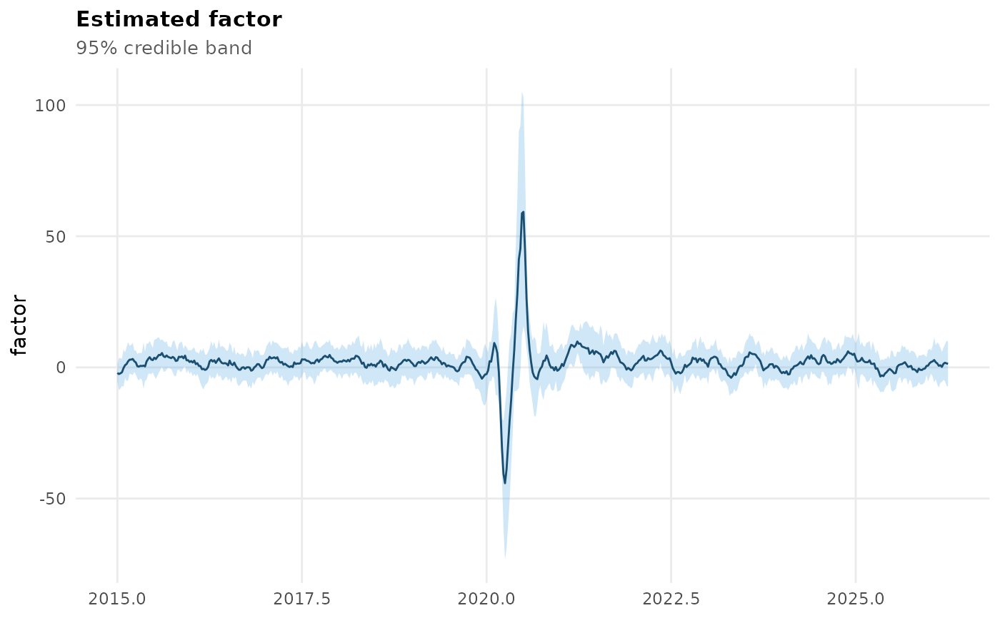
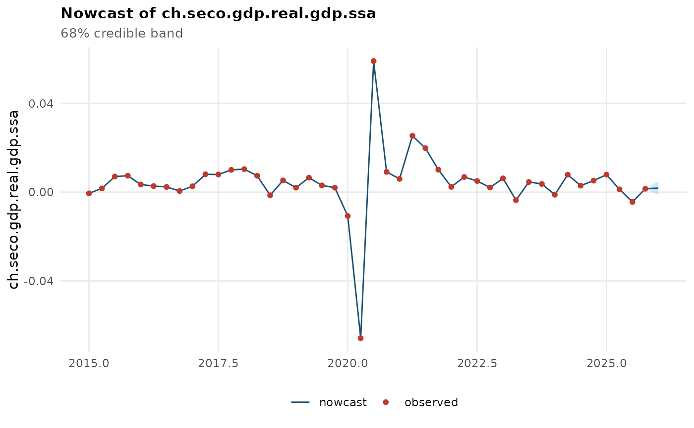
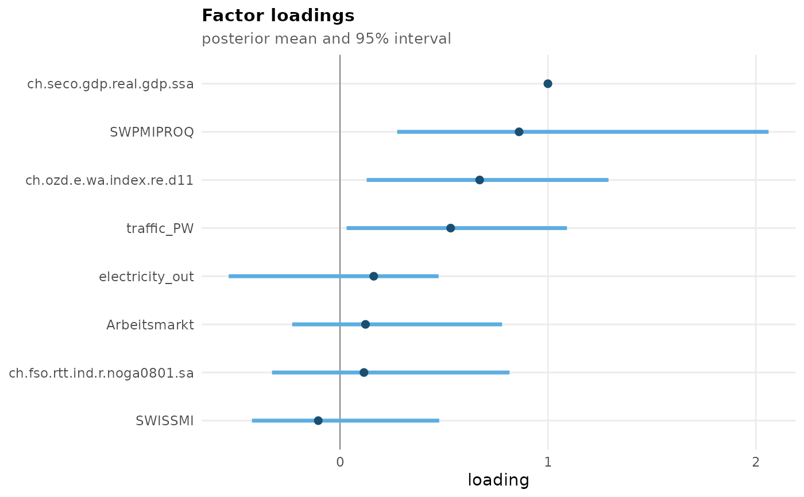
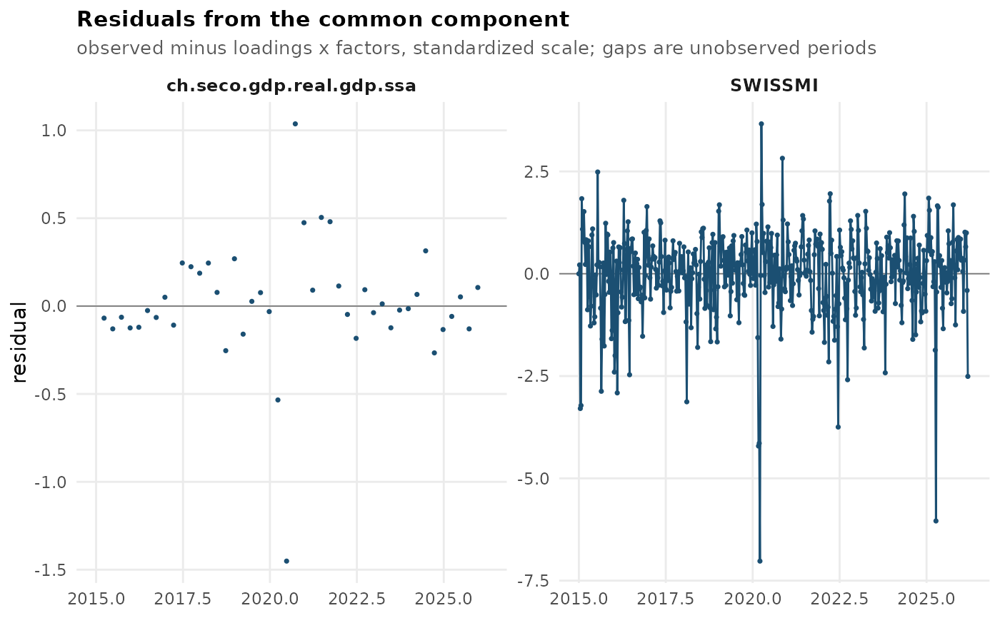
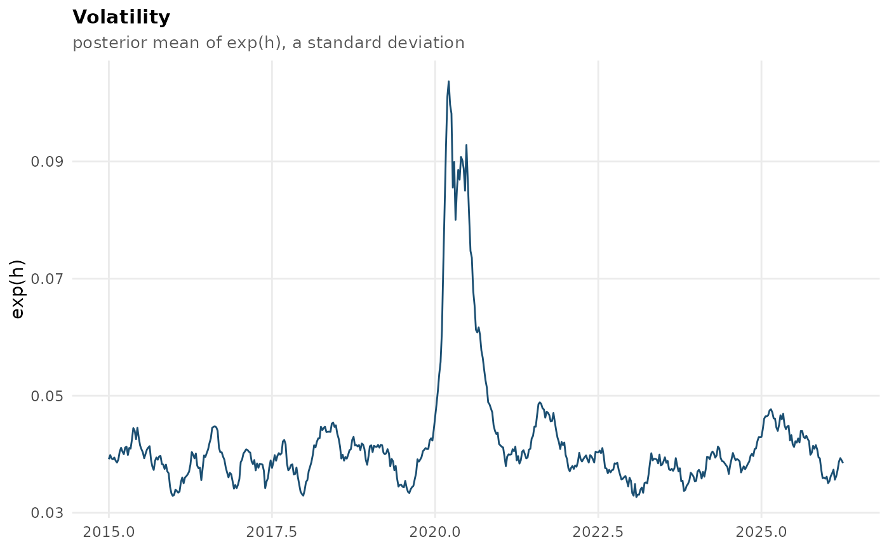

The generics supported by an ind_dfm() fit. fcast_dfm() fits support
the same set – see fcast_dfm_methods.
Usage
# S3 method for class 'ind_dfm'
coef(object, ...)
# S3 method for class 'ind_dfm'
fitted(object, scale = c("standardized", "original"), ...)
# S3 method for class 'ind_dfm'
residuals(object, scale = c("standardized", "original"), ...)
# S3 method for class 'ind_dfm'
logLik(object, ...)
# S3 method for class 'ind_dfm'
as.data.frame(x, row.names = NULL, optional = FALSE, ...)
# S3 method for class 'ind_dfm'
plot(
x,
type = c("factor", "nowcast", "loadings", "residuals", "volatility", "fit"),
series = NULL,
level = 0.95,
...
)
# S3 method for class 'ind_dfm'
autoplot(object, ...)
# S3 method for class 'ind_dfm'
summary(object, ...)
# S3 method for class 'ind_dfm'
print(x, n_show = 8, ...)
# S3 method for class 'ind_dfm'
screeplot(x, ...)Arguments
- object, x
A fit from
ind_dfm().- ...
Ignored, present for compatibility with the generics. For
autoplot(), passed on toplot().- scale
Character, the scale
fitted()andresiduals()report on:"standardized"(the default, the scale the model works in) or"original"(each series back in its own units). Seemfbdfm_table_loadings()for the same argument on the loadings.- row.names, optional
Ignored, present for compatibility with the
as.data.frame()generic.- type
Character, which view
plot()draws – one of"factor","nowcast","loadings","residuals","volatility"or"fit". See "Plot views".- series
Character vector of series names, or a numeric vector of column positions, restricting the
"residuals"and"fit"views.NULL(the default) draws every series. Ignored by the other views.- level
Numeric in
(0, 1), the coverage of the credible band drawn by the"factor"and"nowcast"views. Defaults to0.95.- n_show
Integer, how many of the most recent periods
print()shows.
Value
coef() a named numeric vector; fitted() and residuals() ts
matrices with one column per series; as.data.frame() a data frame with
time and the factor with bands; summary() an object of class
"summary.mfbdfm_fit", whose $r_squared element is a data frame with
columns series, freq, n_obs and r_squared, sorted by fit;
logLik() an object of class "logLik" with df and nobs attributes;
plot() and autoplot() a ggplot object (or NULL invisibly for
type = "volatility" on a fit without stochastic volatility); print()
returns its input invisibly.
Details
print()Model dimensions and the most recent target nowcasts.
summary()Dimensions, posterior mean parameters, residual fit and a per-series R-squared; returns an object with its own
print()method. It carries themfbdfm_table_loadings()andmfbdfm_table_parameters()tables inloadings_tableandparameters_table, and prints from them, so a printed summary and a tabulated one report the same numbers. The R-squared is1 - Var(residual)/Var(observed)over the periods where that series was observed, with the fitted value taken to be the common component – loadings times factors, temporally aggregated – so it measures what the factor explains and not the idiosyncratic AR part. It is therefore not1 - Var(residuals(fit))/Var(observed):fitted()returns the augmented dataset, whose observed entries are pinned to the observed values by the sampler. Forind_dfm()the target's R-squared is ~1 by construction, since its loading is fixed to 1 and its measurement error shrunk towards zero to identify the factor. Read the ranking across the other series rather than the level: the common component is built from posterior mean parameters, which attenuates it, and inind_dfm()the factor's scale is pinned to the target, so a high-frequency series' common component is necessarily a small fraction of its variance.plot()One of several views of the fit, selected by
type– see "Plot views" below. Returns a ggplot object, so it can be modified before printing;autoplot()is an alias.coef()The posterior mean factor loadings, named by series. The other parameter blocks (
phi,sigma,rho,h) remain inobject$pars, and their posterior spread inobject$pars_dist; for a table with uncertainty seemfbdfm_table_loadings()andmfbdfm_table_parameters().fitted()The augmented dataset: observed values where a series was observed, the model's latent estimate where it was not. On the standardized scale the model works in by default;
scale = "original"puts every column back in its own units.residuals()Observed minus fitted. Unobserved periods are
NA, not zero – the prepared data encodes a missing observation as0, so differencing directly would report a spurious residual wherever a series was not observed, which in a mixed-frequency model is most of the matrix for the low-frequency series.scale = "original"rescales by each series' standard deviation only, the series mean cancelling in a difference.as.data.frame()The factor with 95% bands, one row per period, so downstream code need not reach into the list structure.
logLik()A plug-in Gaussian log-likelihood of the observed data, with
dfandnobsattributes so thatAIC()andBIC()work. Read the definition below before using it.screeplot()An error, deliberately. This model has exactly one factor by construction, so a scree plot would be a single bar conveying nothing while implying a choice the model does not offer. The message points to
select_factors()andfcast_dfm(). See fcast_dfm_methods for the version that does plot something.
There is deliberately no predict() method: the model does not forecast in
the usual sense – nowcasts are computed during fitting and stored – so a
predict() returning stored values would advertise a capability that does
not exist. Use mfbdfm_nowcast() to get at those stored nowcasts; it is
the accessor the missing predict() would otherwise be mistaken for.
Plot views
plot(fit, type = ) selects what to draw. Both fit classes support the
same set, and every view returns a ggplot object drawn in one shared
package style:
"factor"(default) the factor – or one panel per factor for a
fcast_dfm()fit – with a credible band."nowcast"the target's nowcast with a credible band, overlaid with the observed target values where the series has them.
"loadings"the posterior mean loading of each series with its 95% posterior interval (from
mfbdfm_table_loadings()), sorted, and faceted by factor forfcast_dfm(). A fit saved before$pars_distexisted has no interval to draw and shows the means alone."residuals"one panel per series of observed minus the common component, on the standardized scale, with unobserved periods left as gaps rather than plotted as zeros.
"volatility"the posterior mean volatility path
exp(h), a standard deviation. Withstochastic_volatility = FALSEthe path is constant, so this reports the constant in a message and returnsNULLinvisibly instead of drawing a flat line."fit"observed values against the common component, one panel per series, on the standardized scale.
The common component is loadings times factors, temporally aggregated –
the part of each series the factor explains, the same quantity the
R-squared in summary() is built on. "residuals" and "fit" use it
rather than fitted()/residuals() deliberately: fitted() is the
augmented dataset, whose observed entries the sampler pins to the data, so
a residual against it is sampling noise of order 1e-5 and an
observed-versus-fitted plot of it is the data drawn twice. Both views need
$factor_std on an ind_dfm() fit, and error on a fit saved before it
existed.
"residuals" and "fit" draw every series by default, which is a lot of
panels for a real dataset; use series to pick a few.
plot() returned its input invisibly and drew in base graphics before
version 0.1.0.9000. It now returns the plot, which still draws it when
called at the console because the object auto-prints.
What logLik() means here
Neither model computes a likelihood while sampling – the factors are drawn jointly from a stacked, precision-based conditional, and there is no Kalman filter anywhere in the package. So the value has to be defined, and the definition adopted is: the Gaussian log density of the observed entries of the prepared data, evaluated at the posterior mean parameters and the posterior mean volatility path, with the factors and the unobserved data entries marginalised out.
It is computed exactly (not by simulation) from the stacked Gaussian form the samplers already use, so nothing is approximated in the arithmetic. What is approximate is the statistics, in three specific ways:
It is a plug-in likelihood at a single parameter value, not the marginal likelihood of the data under the posterior, and not an average of the likelihood over draws. Posterior uncertainty in the parameters is ignored.
It is conditional on the posterior mean volatility path, which is itself a latent state, rather than integrated over it.
dfcounts the parameters of the measurement and state equations only – loadings (net of the identifying restriction), autoregressive coefficients, measurement error variances, measurement error autocorrelations, and the volatility process. The latent states are not counted, and neither is the shrinkage imposed by the priors.
Consequently AIC() and BIC() are approximate for this model class, and
should be read as rough comparisons rather than as model selection
criteria. Both models are hierarchical and Bayesian, and ind_dfm()'s
identification is carried by informative priors (see dfm_priors()), so the
effective number of parameters is not the raw count that df reports. For a
criterion that respects the posterior, prefer DIC or WAIC computed from the
retained draws.
Missing observations are encoded as 0 in the prepared data and are
excluded – they enter as latent quantities to be marginalised out, not
as observed zeros. nobs is therefore the number of genuinely observed
values, which for a mixed-frequency model is far fewer than nrow * ncol.
See also
ind_dfm(), fcast_dfm_methods, mfbdfm_nowcast() for the
nowcasts
Examples
# \donttest{
data(mfbdfm_example_data)
fit <- ind_dfm(mfbdfm_example_data, length_sample = 20, burn_in = 5)
#> preallocating..
#> simulating posterior distribution..
#>
|
| | 0%
|
|=== | 4%
|
|====== | 8%
|
|======== | 12%
|
|=========== | 16%
|
|============== | 20%
|
|================= | 24%
|
|==================== | 28%
|
|====================== | 32%
|
|========================= | 36%
|
|============================ | 40%
|
|=============================== | 44%
|
|================================== | 48%
|
|==================================== | 52%
|
|======================================= | 56%
|
|========================================== | 60%
|
|============================================= | 64%
|
|================================================ | 68%
|
|================================================== | 72%
|
|===================================================== | 76%
|
|======================================================== | 80%
|
|=========================================================== | 84%
|
|============================================================== | 88%
|
|================================================================ | 92%
|
|=================================================================== | 96%
|
|======================================================================| 100%
#> processing output..
fit
#> Single-factor mixed-frequency dynamic factor model (Kronenberg 2026)
#> Call: ind_dfm(flows = mfbdfm_example_data, length_sample = 20, burn_in = 5)
#>
#> series (n) : 8
#> periods (t): 541
#> target : ch.seco.gdp.real.gdp.ssa
#>
#> Most recent nowcasts for ch.seco.gdp.real.gdp.ssa:
#>
#> time nowcast
#> 2024.250 0.00785
#> 2024.500 0.00290
#> 2024.750 0.00518
#> 2025.000 0.00786
#> 2025.250 0.00123
#> 2025.500 -0.00440
#> 2025.750 0.00151
#> 2026.000 0.00182
#>
#> Full results: $factor, $nowcast, $index, $pars; mfbdfm_nowcast(),
#> summary(), plot(), as.data.frame(), coef(), fitted(), residuals(),
#> logLik()
#> Tables: mfbdfm_table_loadings(), mfbdfm_table_parameters(),
#> mfbdfm_table_nowcast()
coef(fit)
#> ch.fso.rtt.ind.r.noga0801.sa ch.ozd.e.wa.index.re.d11
#> 0.1152140 0.6717300
#> SWISSMI traffic_PW
#> -0.1045631 0.5322540
#> electricity_out ch.seco.gdp.real.gdp.ssa
#> 0.1623314 1.0000000
#> SWPMIPROQ Arbeitsmarkt
#> 0.8613749 0.1227184
head(as.data.frame(fit))
#> time factor factor_lower factor_upper
#> 1 2015.000 -2.1234387 -5.296458 1.049580
#> 2 2015.021 -2.5350488 -8.704527 3.634429
#> 3 2015.042 -2.2571539 -8.024603 3.510295
#> 4 2015.062 -1.8548251 -7.001492 3.291842
#> 5 2015.083 -0.2675197 -7.405483 6.870443
#> 6 2015.104 0.8339920 -4.034132 5.702116
logLik(fit)
#> 'log Lik.' -3127.606 (df=25)
AIC(fit) # approximate here - see "What logLik() means"
#> [1] 6305.213
mfbdfm_nowcast(fit, last = TRUE)
#> time nowcast sd lower upper
#> 1 2026 0.001822563 0.003008001 -0.00407301 0.007718136
plot(fit) # the factor, with a 95% band

plot(fit, type = "nowcast", level = 0.68)

plot(fit, type = "loadings")

plot(fit, type = "residuals", series = c(fit$target, "SWISSMI"))

# a ggplot, so it can be modified before printing
plot(fit, type = "volatility") + ggplot2::labs(title = "Volatility")

# }